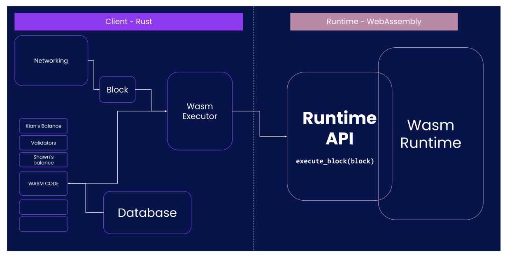

<!DOCTYPE html>
<html lang="en">
  <head>
    <meta charset="utf-8" />
    <meta name="viewport" content="width=device-width, initial-scale=1.0, maximum-scale=1.0, user-scalable=no" />

    <title>Host/Runtime Interface</title>
    <link rel="shortcut icon" href="./../../../favicon.ico" />
    <link rel="stylesheet" href="./../../../dist/reset.css" />
    <link rel="stylesheet" href="./../../../dist/reveal.css" />
    <link rel="stylesheet" href="./../../../assets/styles/polkadot-theme.css" id="theme" />
    <link rel="stylesheet" href="./../../../css/highlight/shades-of-purple.css" />

    <link rel="stylesheet" href="./../../.././assets/styles/custom-classes.css" />
    <link rel="stylesheet" href="./../../.././assets/styles/polkadot-theme-base.css" />
    <link rel="stylesheet" href="./../../.././assets/styles/PBA-theme.css" />
    <link rel="stylesheet" href="./../../.././plugin/design-system/index.css" />

  </head>
  <body class="site">
    <header class="site-header">
      <a href="">
        
      </a>
      
    </header>
    <main class="site-reveal reveal">
      <article class="slides">
        <section ><section data-markdown><script type="text/template">

# Host/Runtime Interface
</script></section><section data-markdown><script type="text/template">
### Host/Runtime Interface

The Client / Runtime division is one of the most important design decisions in Substrate.

In this lecture:

Where the **boundary** is, and how the the two **communicate**.
</script></section></section><section ><section data-markdown><script type="text/template">
### Substrate

It is one big box of code.

<image src="../../../assets/img/4-Substrate/4.3_runtime_host_-1.svg" style="width: 1000px">
</script></section><section data-markdown><script type="text/template">
### Substrate

<image src="../../../assets/img/4-Substrate/4.3_runtime_host_0.svg" style="width: 1000px">
</script></section><section data-markdown><script type="text/template">
### Substrate

<image src="../../../assets/img/4-Substrate/4.3_runtime_host_1.svg" style="width: 550px">
</script></section><section data-markdown><script type="text/template">
### Boundary: Client

On the client side, you have:

- P2P networking
- Block database including block storage
- Consensus (Block authoring/Finality)
- Wasm executor
- Native runtime.
- Database

<aside class="notes"><p>These are the normal P2P blockchain style tasks. Most chain developers will not want to customize this stuff at all. If you want to, you can. Especially consensus. But you typically won&#39;t need to.</p>
<p>All these element are directly (through host function) reachable from the runtime.</p>
<ul>
<li>Storage is, but behind a state-machine overlay.</li>
<li>Wasm executor is, but not in real life usage (through the experimental worker api).</li>
<li>Networking is but only in a limited form and only for off-chain host function.</li>
</ul>
</aside></script></section><section data-markdown><script type="text/template">
### Boundary: Runtime

- Execute blocks.
- Transaction validity.

> Substrate client sees transactions as `Vec<u8>`.

- (help) Author blocks.

...

- Consensus-adjacent tasks like **authority set management**.
- Provide data to the client upon request through **accessor apis** (eg Aura Api).

<aside class="notes"><p>The first three are really the core jobs. Constructing blocks is a job for miners or validators. It makes sense to do block construction with the runtime because much code will be shared and the runtime itself is what will validate the blocks anyway.
Consensus related tasks are really just part of the same state transition logic. Although they can feel &quot;meta&quot; they are equal with token transfers etc.
Jobs like accessing data might seem tangential and redundant. We will talk about them more shortly</p>
</aside></script></section><section data-markdown><script type="text/template">
### Boundary: Runtime

- State transition.
- Customization.
- Upgradable!
</script></section></section><section ><section data-markdown><script type="text/template">
### Runtime Upgrades

<image src="../../../assets/img/4-Substrate/4.3-code_update_0.svg" style="width:600px">

<aside class="notes"><p>Explains how a CODE update works: The data is in the database, like everyone&#39;s balance. Among this data, we also have the code. this code is given to the wasm executor, and there you go, that&#39;s the runtime.</p>
</aside></script></section><section data-markdown><script type="text/template">
### Runtime Upgrades

<image src="../../../assets/img/4-Substrate/4.3-code_update_1.svg" style="width:600px">
</script></section><section data-markdown><script type="text/template">
### Runtime Upgrades

<image src="../../../assets/img/4-Substrate/4.3-code_update_2.svg" style="width:600px">
</script></section><section data-markdown><script type="text/template">
### Runtime Upgrades

<image src="../../../assets/img/4-Substrate/4.3-code_update_3.svg" style="width: 1000px">
</script></section><section data-markdown><script type="text/template">
### Boundary: Client and Runtime

Substrate as a whole is like an FPGA.

- The runtime is the **HDL** (e.g. VHDL).
- The client is the **hardware**, i.e. the gate array.

> The WASM is the **meta-protocol**.
</script></section></section><section ><section data-markdown><script type="text/template">
### Client - Runtime Communication

</img>
</script></section><section data-markdown><script type="text/template">
### Example: Block Execution


</script></section><section data-markdown><script type="text/template">
### Example: Block Execution


</script></section><section data-markdown><script type="text/template">
### Example: Block Execution


</script></section><section data-markdown><script type="text/template">
### Example: Block Execution


</script></section><section data-markdown><script type="text/template">
### Example: Block Execution - Takeaways

1. The client is in charge of **storing** state -- the runtime is in charge of **understanding** it.

> Because the runtime can change, so can the types.

<hr>

2. The _wasm of every block_ is part of the _state of that block_.
</script></section></section><section ><section data-markdown><script type="text/template">
## Examples
</script></section><section data-markdown><script type="text/template">
### Examples: Runtime API

Some [existing runtime APIs](https://github.com/substrate-developer-hub/substrate-node-template/blob/4ea490ef8ee7cde7668c56dc548e72ee8695297b/runtime/src/lib.rs#L335) in Substrate include:

- **Core** - most important - for executing blocks.
- **TxQueue** - tells the off-chain code whether a transaction is valid and how to prioritize it.
- **BlockBuilder** - critical for authoring nodes - for writing blocks.
- **OffchainWorker** - doing non-consensus tasks.
- **Metadata** - we won't use it much today - to teach off-chain tools the structure of your storage and extrinsics.
- **Consensus related**, aka - **Accessors**.
- **Testing**.
</script></section><section data-markdown><script type="text/template">
### Which Runtime APIs are "required"?

Depends on what your node wants to do 🤷.

<!-- .element: class="fragment" -->
</script></section><section data-markdown><script type="text/template">
### Examples: Host Function

See [some existing host functions](https://github.com/paritytech/substrate/blob/4a19d408095ebcb47840ad1f2f086f53a0020cb7/primitives/io/src/lib.rs#L125) in Substrate:

- Cryptography operations and hashing.
- IO
  - storage
  - print
- storage root.
- allocating memory.
- threads (experimental).

<aside class="notes"><p>Extensible but with a lot of limitation when it comes to the polkadot system as will be seen in the
next modules.</p>
<p>ethereum got transaction of modified content embedded in the way thing works, we will see later that substrate simply use host function to reproduce this mechanism.</p>
<p>storage root: can spend time on it: explain the need to cache things, even go through state machine code a bit.</p>
<p>This is a good cost gain as using trie code on the hash function would be a LOT of host function calls.
Yet when using cumulus, that is what happen.</p>
</aside></script></section><section data-markdown><script type="text/template">
### Another Example: TransactionPool

Find the flow of transactions!

</img>
</script></section><section data-markdown><script type="text/template">
### Another Example: TransactionPool

> Transaction Pool operations have NO SIDE EFFECTs -- No _write_ host functions.
</script></section></section><section  data-markdown><script type="text/template">
## Workshop: Code Walkthrough

Let's have a brief look at `substrate-node` / `node-template` and `sp-io`.
</script></section><section ><section data-markdown><script type="text/template">
## Defining a Runtime API

```rust [1-9|11-18|20-31]
// somewhere in common between client/runtime => substrate-primitive.
decl_runtime_apis! {
	pub trait Core {
		fn version() -> RuntimeVersion;
		fn execute_block(block: Block) -> bool;
		#[renamed("initialise_block", 2)]
		fn initialize_block(header: &<Block as BlockT>::Header);
	}
}

// somewhere in the runtime code.
impl_runtime_apis! {
  impl sp_api::Core<Block> for Runtime {
    fn version() -> RuntimeVersion { /* stuff */ }
    fn execute_block(block: Block) -> bool { /* stuff */ }
    fn initialize_block(header: &<Block as BlockT>::Header) { /* stuff */ }
  }
}

// somewhere in the client code..
let block_hash = "0xffff...";
let block = Block { ... };
let outcome: Vec<u8> = api.execute_block(block_hash, block).unwrap();
```
</script></section><section data-markdown><script type="text/template">
### Defining a Runtime API: Takeaways

- All runtime APIs are executed on top of a **specific block**. This is the implicit _at_ parameter.

- All api traits are generic over `Block`.

- All runtime APIs return a `Result<Vec<u8>, _>`, where the inner `Vec<u8>` is the SCALE encoded value that we wanted to return. In some abstractions, they also auto-decode it, in some they don't.

> going through the runtime API, **everything** is encode/decode-ed **both-ways**.

- All runtime APIs are implicitly generic over `<Block>`. Has to do with the `at` param and the opaque types.
</script></section></section><section ><section data-markdown><script type="text/template">
## Defining a Host Function

```rust [1-16|18-30]
// somewhere in substrate primitives, almost always `sp_io`.
#[runtime_interface]
pub trait Storage {
  fn get(&self, key: &[u8]) -> Option<Vec<u8>> {
    self.storage(key).map(|s| s.to_vec())
  }

  fn root() -> Vec<u8>
}

#[runtime_interface]
pub trait Hashing {
	fn blake2_128(data: &[u8]) -> [u8; 16] {
		sp_core::hashing::blake2_128(data)
	}
}

// somewhere in substrate runtime
let hashed_value = sp_io::storage::get(b"key")
  .and_then(sp_io::hashing::blake2_128)
  .unwrap();
```
</script></section><section data-markdown><script type="text/template">
### Defining a Host Function

Could we have named this stuff better?

Absolutely. Let's recap.

<!-- .element: class="fragment" -->

`#[runtime_interface]`, `sp_io`, **Host function**.

<!-- .element: class="fragment" -->
</script></section></section><section ><section data-markdown><script type="text/template">
## Considerations
</script></section><section data-markdown><script type="text/template">
### Consideration: Native Runtime

</img>

Remember the `fn version()` in `Core` API!.<br>
Types are no longer `SCALE` encoded.
</script></section><section data-markdown><script type="text/template">
### Considerations: Determinism

- All about **context**, but generally crucial.

- `Core` must be **absolutely deterministic** 👊.
- `BlockBuilder`... 🧐
- `OffchainWorker`... 🤷

> Host functions that mutate state (`storage`) must be deterministic.

<aside class="notes"><p>Wasm is not fully so some instruction are <code>forbidden</code> eg float,.</p>
<p><code>sp_io</code> design containing both consensus and non-consensus host functions is probably not the best choice.</p>
</aside></script></section><section data-markdown><script type="text/template">
### Considerations: Speed

Native is generally **faster than WASM\***..

..but it has a **slow one-time delay**.

WASM call ~ IO.

> \* Heavily depends on WASM execution type.

<aside class="notes"><ul>
<li>cost of calling is parameter passing: memory copy: one should strive to reduce the number of call to host function.</li>
<li>For instance in storage when calculating the root we do not build it in wasm and call the hash host
function multiple times: we just have a host function doing the root calculation and state trie kept
in client.</li>
</ul>
<p>On the other hand things as <code>next_storage</code> are high cost (generally iteration on state from runtime
is expensive). This design is related to the memory location, there is alternative but this is
simple (simple as good design).</p>
<p>(iteration remains very costly: because each call to next is going through the host function boundaries (and historically caching is not supporting it : only get: trade off between code complexity and performance here)</p>
<ul>
<li>Question: we got host function for running computation intensive code in native, but when simd for
wasm would be added, then will host function for a hashing be still useful:</li>
</ul>
<p>A: wait and see, but is possible that simd optimization of the hash function in wasm is way faster.</p>
<p>Again using a host function for speed up needs to be reasoned, cost of transmitting parameter in
wasm can be bigger than the actual hashing cost.</p>
</aside></script></section><section data-markdown><script type="text/template">
### Consideration: Types.

The runtime and the client basically only talk to each other in opaque types, i.e. `Vec<u8>`.
</script></section><section data-markdown><script type="text/template">
### Consideration: Adding Host Function

Adding a host function that's not being used?

- nada 😅

<!-- .element: class="fragment" -->

Runtime requiring a host function?

<!-- .element: class="fragment" -->

1. Runtime upgrades that demand new host functions cannot be fully forkless 🤔..

<!-- .element: class="fragment" -->

1. The old one must stay FOREVER! 😱

<!-- .element: class="fragment" -->
</script></section><section data-markdown><script type="text/template">
### Consideration: Adding Host Function

All Substrate PRs that have added new host functions:
https://github.com/paritytech/substrate/issues?q=label%3AE4-newhostfunctions+is%3Aclosed

All substrate PRs that have required the client to be update first: https://github.com/paritytech/substrate/issues?q=is%3Aclosed+label%3A%22E10-client-update-first+%F0%9F%91%80%22
</script></section><section data-markdown><script type="text/template">
### Consideration: Runtime API Versioning

The runtime APIs of each runtime are explicitly defined.

The types (including the return types corresponding to that runtime API) are in the metadata.

It is _in principle_ solved.

Not always in practice.

<aside class="notes"><p>Unlike the host functions that are all dumped in <code>sp_io</code>.</p>
</aside></script></section><section data-markdown><script type="text/template">
### Consideration: Runtime API Versioning

> Rule of thumb: Every time you change the signature of a host function / runtime API, i.e. change
> the input/output types, you need to think about this.

But what you have to do is dependent on the scenario.
</script></section><section data-markdown><script type="text/template">
### Consideration: Runtime API Versioning

```rust
sp_api::decl_runtime_apis! {
	#[api_version(6)]
	pub trait BlockBuilder {
		/// Apply the given extrinsic.
		///
		/// Returns an inclusion outcome which specifies if this extrinsic is included in
		/// this block or not.
		fn apply_extrinsic(extrinsic: <Block as BlockT>::Extrinsic) -> ApplyExtrinsicResult;

		#[changed_in(6)]
		fn apply_extrinsic(
			extrinsic: <Block as BlockT>::Extrinsic,
		) -> sp_runtime::legacy::byte_sized_error::ApplyExtrinsicResult;
	}
}
```
</script></section><section data-markdown><script type="text/template">
### Consideration: Runtime API Versioning

> Example in the code: `system_dryRun` RPC.

```rust
let result = if api_version < 6 {
  #[allow(deprecated)]
  let _ = api.apply_extrinsic_before_version_6(&at, uxt)
    .map(convert_old_error_to_new);
} else {
  let _ = api.apply_extrinsic(&at, uxt);
};
```
</script></section></section><section ><section data-markdown><script type="text/template">
### Workshop: Expanding The Wasm Code

`wasm2wat polkadot_runtime.wasm > dump | rg export`

```
  (export "__indirect_function_table" (table 0))
  (export "Core_version" (func $Core_version))
  (export "Core_execute_block" (func $Core_execute_block))
  (export "Core_initialize_block" (func $Core_initialize_block))
  (export "Metadata_metadata" (func $Metadata_metadata))
  (export "BlockBuilder_apply_extrinsic" (func $BlockBuilder_apply_extrinsic))
  (export "BlockBuilder_finalize_block" (func $BlockBuilder_finalize_block))
  (export "BlockBuilder_inherent_extrinsics" (func $BlockBuilder_inherent_extrinsics))
  (export "BlockBuilder_check_inherents" (func $BlockBuilder_check_inherents))
  (export "TaggedTransactionQueue_validate_transaction" (func $TaggedTransactionQueue_validate_transaction))
  (export "OffchainWorkerApi_offchain_worker" (func $OffchainWorkerApi_offchain_worker))
  (export "ParachainHost_validators" (func $ParachainHost_validators))
  (export "ParachainHost_validator_groups" (func $ParachainHost_validator_groups))
  (export "ParachainHost_availability_cores" (func $ParachainHost_availability_cores))
  (export "ParachainHost_persisted_validation_data" (func $ParachainHost_persisted_validation_data))
  (export "ParachainHost_assumed_validation_data" (func $ParachainHost_assumed_validation_data))
  (export "ParachainHost_check_validation_outputs" (func $ParachainHost_check_validation_outputs))
  (export "ParachainHost_session_index_for_child" (func $ParachainHost_session_index_for_child))
  (export "ParachainHost_validation_code" (func $ParachainHost_validation_code))
  (export "ParachainHost_candidate_pending_availability" (func $ParachainHost_candidate_pending_availability))
  (export "ParachainHost_candidate_events" (func $ParachainHost_candidate_events))
  (export "ParachainHost_session_info" (func $ParachainHost_session_info))
  (export "ParachainHost_dmq_contents" (func $ParachainHost_dmq_contents))
  (export "ParachainHost_inbound_hrmp_channels_contents" (func $ParachainHost_inbound_hrmp_channels_contents))
  (export "ParachainHost_validation_code_by_hash" (func $ParachainHost_validation_code_by_hash))
  (export "ParachainHost_on_chain_votes" (func $ParachainHost_on_chain_votes))
  (export "ParachainHost_submit_pvf_check_statement" (func $ParachainHost_submit_pvf_check_statement))
  (export "ParachainHost_pvfs_require_precheck" (func $ParachainHost_pvfs_require_precheck))
  (export "ParachainHost_validation_code_hash" (func $ParachainHost_validation_code_hash))
  (export "ParachainHost_staging_get_disputes" (func $ParachainHost_staging_get_disputes))
  (export "BeefyApi_validator_set" (func $BeefyApi_validator_set))
  (export "MmrApi_generate_proof" (func $MmrApi_generate_proof))
  (export "MmrApi_verify_proof" (func $MmrApi_verify_proof))
  (export "MmrApi_verify_proof_stateless" (func $MmrApi_verify_proof_stateless))
  (export "MmrApi_mmr_root" (func $MmrApi_mmr_root))
  (export "MmrApi_generate_batch_proof" (func $MmrApi_generate_batch_proof))
  (export "MmrApi_verify_batch_proof" (func $MmrApi_verify_batch_proof))
  (export "MmrApi_verify_batch_proof_stateless" (func $MmrApi_verify_batch_proof_stateless))
  (export "GrandpaApi_grandpa_authorities" (func $GrandpaApi_grandpa_authorities))
  (export "GrandpaApi_current_set_id" (func $GrandpaApi_current_set_id))
  (export "GrandpaApi_submit_report_equivocation_unsigned_extrinsic" (func $GrandpaApi_submit_report_equivocation_unsigned_extrinsic))
  (export "GrandpaApi_generate_key_ownership_proof" (func $GrandpaApi_generate_key_ownership_proof))
  (export "BabeApi_configuration" (func $BabeApi_configuration))
  (export "BabeApi_current_epoch_start" (func $BabeApi_current_epoch_start))
  (export "BabeApi_current_epoch" (func $BabeApi_current_epoch))
  (export "BabeApi_next_epoch" (func $BabeApi_next_epoch))
  (export "BabeApi_generate_key_ownership_proof" (func $BabeApi_generate_key_ownership_proof))
  (export "BabeApi_submit_report_equivocation_unsigned_extrinsic" (func $BabeApi_submit_report_equivocation_unsigned_extrinsic))
  (export "AuthorityDiscoveryApi_authorities" (func $AuthorityDiscoveryApi_authorities))
  (export "SessionKeys_generate_session_keys" (func $SessionKeys_generate_session_keys))
  (export "SessionKeys_decode_session_keys" (func $SessionKeys_decode_session_keys))
  (export "AccountNonceApi_account_nonce" (func $AccountNonceApi_account_nonce))
  (export "TransactionPaymentApi_query_info" (func $TransactionPaymentApi_query_info))
  (export "TransactionPaymentApi_query_fee_details" (func $TransactionPaymentApi_query_fee_details))
  (export "__data_end" (global 1))
  (export "__heap_base" (global 2))
```
</script></section><section data-markdown><script type="text/template">
### Workshop: Expanding The Wasm Code

`wasm2wat polkadot_runtime.wasm > dump | rg import`

```
  (import "env" "memory" (memory (;0;) 22))
  (import "env" "ext_offchain_index_set_version_1" (func $ext_offchain_index_set_version_1 (type 16)))
  (import "env" "ext_allocator_free_version_1" (func $ext_allocator_free_version_1 (type 1)))
  (import "env" "ext_allocator_malloc_version_1" (func $ext_allocator_malloc_version_1 (type 0)))
  (import "env" "ext_default_child_storage_clear_version_1" (func $ext_default_child_storage_clear_version_1 (type 16)))
  (import "env" "ext_default_child_storage_get_version_1" (func $ext_default_child_storage_get_version_1 (type 17)))
  (import "env" "ext_default_child_storage_next_key_version_1" (func $ext_default_child_storage_next_key_version_1 (type 17)))
  (import "env" "ext_default_child_storage_set_version_1" (func $ext_default_child_storage_set_version_1 (type 18)))
  (import "env" "ext_logging_log_version_1" (func $ext_logging_log_version_1 (type 19)))
  (import "env" "ext_logging_max_level_version_1" (func $ext_logging_max_level_version_1 (type 14)))
  (import "env" "ext_crypto_ed25519_generate_version_1" (func $ext_crypto_ed25519_generate_version_1 (type 20)))
  (import "env" "ext_crypto_ed25519_verify_version_1" (func $ext_crypto_ed25519_verify_version_1 (type 21)))
  (import "env" "ext_crypto_finish_batch_verify_version_1" (func $ext_crypto_finish_batch_verify_version_1 (type 14)))
  (import "env" "ext_crypto_secp256k1_ecdsa_recover_version_2" (func $ext_crypto_secp256k1_ecdsa_recover_version_2 (type 22)))
  (import "env" "ext_crypto_secp256k1_ecdsa_recover_compressed_version_2" (func $ext_crypto_secp256k1_ecdsa_recover_compressed_version_2 (type 22)))
  (import "env" "ext_crypto_sr25519_generate_version_1" (func $ext_crypto_sr25519_generate_version_1 (type 20)))
  (import "env" "ext_crypto_sr25519_public_keys_version_1" (func $ext_crypto_sr25519_public_keys_version_1 (type 4)))
  (import "env" "ext_crypto_sr25519_sign_version_1" (func $ext_crypto_sr25519_sign_version_1 (type 23)))
  (import "env" "ext_crypto_sr25519_verify_version_2" (func $ext_crypto_sr25519_verify_version_2 (type 21)))
  (import "env" "ext_crypto_start_batch_verify_version_1" (func $ext_crypto_start_batch_verify_version_1 (type 13)))
  (import "env" "ext_hashing_blake2_128_version_1" (func $ext_hashing_blake2_128_version_1 (type 24)))
  (import "env" "ext_hashing_blake2_256_version_1" (func $ext_hashing_blake2_256_version_1 (type 24)))
  (import "env" "ext_hashing_keccak_256_version_1" (func $ext_hashing_keccak_256_version_1 (type 24)))
  (import "env" "ext_hashing_twox_128_version_1" (func $ext_hashing_twox_128_version_1 (type 24)))
  (import "env" "ext_hashing_twox_64_version_1" (func $ext_hashing_twox_64_version_1 (type 24)))
  (import "env" "ext_storage_append_version_1" (func $ext_storage_append_version_1 (type 16)))
  (import "env" "ext_storage_clear_version_1" (func $ext_storage_clear_version_1 (type 25)))
  (import "env" "ext_storage_clear_prefix_version_2" (func $ext_storage_clear_prefix_version_2 (type 17)))
  (import "env" "ext_storage_commit_transaction_version_1" (func $ext_storage_commit_transaction_version_1 (type 13)))
  (import "env" "ext_storage_exists_version_1" (func $ext_storage_exists_version_1 (type 24)))
  (import "env" "ext_storage_get_version_1" (func $ext_storage_get_version_1 (type 26)))
  (import "env" "ext_storage_next_key_version_1" (func $ext_storage_next_key_version_1 (type 26)))
  (import "env" "ext_storage_read_version_1" (func $ext_storage_read_version_1 (type 27)))
  (import "env" "ext_storage_rollback_transaction_version_1" (func $ext_storage_rollback_transaction_version_1 (type 13)))
  (import "env" "ext_storage_root_version_2" (func $ext_storage_root_version_2 (type 4)))
  (import "env" "ext_storage_set_version_1" (func $ext_storage_set_version_1 (type 16)))
  (import "env" "ext_storage_start_transaction_version_1" (func $ext_storage_start_transaction_version_1 (type 13)))
  (import "env" "ext_misc_print_hex_version_1" (func $ext_misc_print_hex_version_1 (type 25)))
  (import "env" "ext_misc_print_utf8_version_1" (func $ext_misc_print_utf8_version_1 (type 25)))
  (import "env" "ext_misc_runtime_version_version_1" (func $ext_misc_runtime_version_version_1 (type 26)))
  (import "env" "ext_trie_blake2_256_ordered_root_version_2" (func $ext_trie_blake2_256_ordered_root_version_2 (type 28)))
  (import "env" "ext_offchain_is_validator_version_1" (func $ext_offchain_is_validator_version_1 (type 14)))
  (import "env" "ext_offchain_local_storage_clear_version_1" (func $ext_offchain_local_storage_clear_version_1 (type 29)))
  (import "env" "ext_offchain_local_storage_compare_and_set_version_1" (func $ext_offchain_local_storage_compare_and_set_version_1 (type 30)))
  (import "env" "ext_offchain_local_storage_get_version_1" (func $ext_offchain_local_storage_get_version_1 (type 11)))
  (import "env" "ext_offchain_local_storage_set_version_1" (func $ext_offchain_local_storage_set_version_1 (type 19)))
  (import "env" "ext_offchain_network_state_version_1" (func $ext_offchain_network_state_version_1 (type 15)))
  (import "env" "ext_offchain_random_seed_version_1" (func $ext_offchain_random_seed_version_1 (type 14)))
  (import "env" "ext_offchain_submit_transaction_version_1" (func $ext_offchain_submit_transaction_version_1 (type 26)))
  (import "env" "ext_offchain_timestamp_version_1" (func $ext_offchain_timestamp_version_1 (type 15)))
```

<aside class="notes"><p>BlockBuilder example</p>
</aside></script></section></section><section ><section data-markdown><script type="text/template">
### Coding Activity 1 - Flipper Runtime

We have prepared a FRAME-less runtime. Let's walk over it a bit.

It does, by all means nothing.

try and do as many of the following, in the same order:

- make it a flipper: it stores one `bool` value, and per each transaction, flips that value.
- make it an adder: it stores one `u32` value, and each transaction specifies a number, which is
  added to this value and stored onchain again.
- extend your transaction so that the runtime can be either an adder or a multiplier.
</script></section><section data-markdown><script type="text/template">
### Coding Activity 1 - Flipper Runtime

- add a kill-switch to this runtime. Look into `well_known_keys` to see which key you have to wipe.
- make this runtime upgradable! The upgrade operation can simply be protected by a "password" as you
  don't have any notion of accounts yet.
- Add a notion of accounts and nonces and signatures.
- Add a notion of balances
- Write a custom runtime API, and try to call it over the RPC.
- Implement a tx-pool api, implement tipping, priority, longevity etc.

.. you can virtually do endless experiments on top of the frameless runtime. Make good ues of it,
and you will learn a lot about the fundamentals of substrate!

Moreover, this is the perfect intro to FRAME. You feel the pain of how hard it is to code your own
blockchain from scratch 😈.
</script></section></section><section  data-markdown><script type="text/template">
## Coding Activity 2 - Host Function, or Not?

Hypothesis: It is arguable that for very small values, hashing the value in the runtime could be
faster than passing it to the client and back.

Implement a simple hashing algorithm that does this in your FRAME-less runtime. experiment, and report any findings.
</script></section>
      </article>
    </main>

    <script src="./../../../dist/reveal.js"></script>
    <script src="./../../../plugin/markdown/markdown.js"></script>
    <script src="./../../../plugin/highlight/highlight.js"></script>
    <script src="./../../../plugin/zoom/zoom.js"></script>
    <script src="./../../../plugin/notes/notes.js"></script>
    <script src="./../../../plugin/math/math.js"></script>

    <script type="module">
      import DesignSystem from "./../../../plugin/design-system/design-system.js"

      function extend() {
        var target = {};
        for (var i = 0; i < arguments.length; i++) {
          var source = arguments[i];
          for (var key in source) {
            if (source.hasOwnProperty(key)) {
              target[key] = source[key];
            }
          }
        }
        return target;
      }

      // default options to init reveal.js
      var defaultOptions = {
        controls: true,
        progress: true,
        history: true,
        center: true,
        transition: 'default', // none/fade/slide/convex/concave/zoom
        plugins: [
          RevealMarkdown,
          RevealHighlight,
          RevealZoom,
          RevealNotes,
          RevealMath,
          DesignSystem
        ]
      };

      // options from URL query string
      const queryOptions = Reveal().getQueryHash() || {};

      const options = extend(defaultOptions, {"width":1400,"height":900,"margin":0,"minScale":0.2,"maxScale":2,"transition":"none","controls":true,"progress":true,"center":true,"slideNumber":true,"backgroundTransition":"fade"}, queryOptions);
      options.baseUrl = '';
      Reveal.initialize(options);
    </script>
  </body>
</html>
